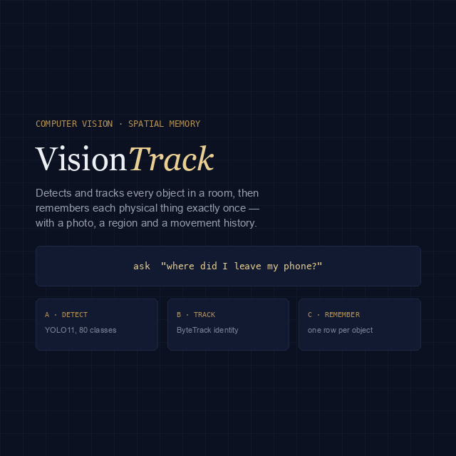

Computer Vision · Spatial Memory
VisionTrack
Spatial memory for a room. VisionTrack watches a video, recognises every object in it, remembers each physical thing exactly once — not once per frame — works out which part of the room it is in, and records when it moves. Afterwards you can simply ask where you left something.

The Problem
Detection is per frame.
Memory is per object.
Run an object detector over a video and you get thousands of boxes — the same laptop, found again and again, with no notion that it is one laptop. Add a tracker and you get tracks, but a track dies the moment the object leaves frame and a fresh one is born when it returns. Neither gives you the thing a person actually wants, which is a list of the objects in their room and where each one currently is. VisionTrack closes that gap: detection and tracking feed a persistent memory in which one row means one physical object, however many times it has been seen, lost and seen again.
The Pipeline
Four stages,
one identity.
Detect — YOLO11
Ultralytics YOLO11 across the 80 COCO classes, with the
device auto-selected: Apple GPU via
MPS, NVIDIA via CUDA, or CPU.
Track — ByteTrack
ByteTrack keeps identity stable across consecutive frames, including through the low-confidence detections that naive trackers throw away.
Remember — one row per object
A re-identification pass collapses tracks back onto the same physical object when it leaves and re-enters view, so the memory holds objects, not sightings. Each one keeps a cropped photo, a first- and last-seen timestamp, an observation count and an average confidence.
Locate — regions and movement
The room is divided into named regions. Every object carries the region it sits in and a timeline of its moves between them, which is what turns "I saw a phone" into "the phone is in the keyboard area".
The Interface
Ask it
in plain language.
A Flask + Socket.IO UI streams the memory as it is built — live analysis, an object gallery, a room map and a question box — so you watch the room being understood rather than waiting for a batch job. NVIDIA Nemotron answers free-form questions over the stored memory, which means the numbers and places in an answer come from the database, not from the model's imagination.
"Where did I leave my phone?" → "I remember 2 cell phones. The most recent one (#4) was last seen in the keyboard area 3 days ago; the other is there too."